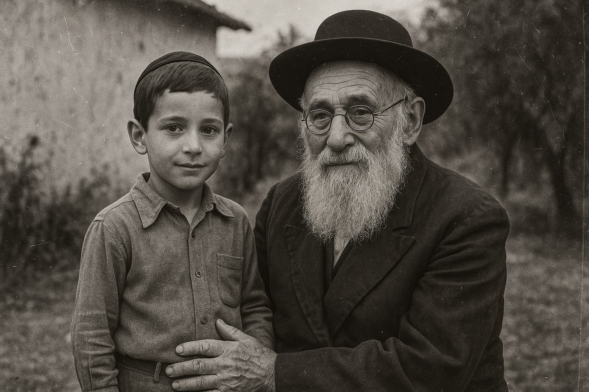

— בית לסיפורים שנשארים
יש סיפורים
שאסור לתת להם
להיעלם.
הקול של סבא. המבט של אימא. הסיפור שעובר במשפחה.
אנחנו כאן כדי להפוך זיכרון לרגש שאפשר להעביר הלאה.
להמחיש את הרגש. להשאיר חותם.
הקשר שבין הדורותHOTAM / VIP

תמונה להמחשה · מתוך נכסי חותםמדור לדור. מלב ללב.לגלות את אוסף הסרטים ←סרטי מורשת✦סיפורי משפחה✦ארכיון ושורשים✦זיכרונות לדורות
האוסף שלנו / 01
אנשים אמיתיים.
סיפורים שנוגעים.
לכל משפחה יש עולם משלה.
מוזמנים להיכנס לכמה מהעולמות שלנו.
ארכיון ושורשים / 02
מסמך ישן.
חיבור חדש.
שם בעיתון ישן. תמונה שאיש לא זיהה. קצה חוט שמוביל אל המשפחה, הקהילה או החצר.
בחותם אנחנו מפתחים בית גם לסיפורי השורשים האלה: המקור, ההקשר והסיפור שמאחוריו, בעברית שאפשר לקרוא ולהעביר הלאה.
יש לכם קצה חוט? דברו איתנו ←למה חותם / 03
לא רק לזכור
מה היה.
להרגיש מי אנחנו.
יש סיפור שרק אתם יודעים.
מנהג שעובר בשושלת. מעשה גבורה שסבא סיפר פעם אחת. משפט של אימא שעדיין הולך איתכם.
חותם נולד מהמקום הזה — מהרצון לאסוף את הרגעים, לתת להם מקום, ולשמור את הקשר בין הדורות.
כי סיפור שמספרים, ממשיך לחיות.